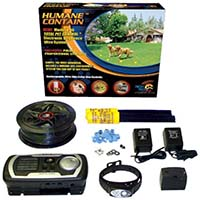

Multi-function Electronic Dog Fence
Multi-function Electronic Dog Fence
Description
The most advanced electronic fence technology for highly humane and extremely reliable operation
Uses proprietary technology to automatically adjust stimulus intensity based on distance from boundary, keeping pet contained without overstimulation
Rechargeable waterproof collar also controls High Tech Pet Power Pet doors, Sound Barrier and Yard Barrier systems and Radio Mat pet deterrent kits
Waterproof, outdoor mountable transmitter features illuminated status panel, wire break alarms, power boost switch and variable field width control
Includes TX-1 transmitter, RX-10 multi-function collar and charger, 500-feet wire, 50 flags, 5 wire splices and AC adapters for transmitter.
In Stock
Price $250.00
Customer Reviews
I purchased the High Tech Pet Humane Contain X-10 Rechargeable Multi-function Electronic Dog Fence which is essentially the same product with a more advanced collar to be able to operate all the products High Tech Pet has. I am NOT a fan of electric fences for dogs, however, I have a stubborn Siberian who kept escaping our yard and running over to the neighbors and killing their cats. We had to do something. (Our physical fence is 8 feet high and has a two stage barrier, meaning she has to get past a security fence placed around the original fence. Rebar was placed 4 inches appart along the bottom of the fence and she was still escaping [we live on 5 acres]).Setup took 2 hours and the RX-10 collar was charged out of the box. I know this because I tested it on myself several times before putting it on my dog. I am a trainer myself and will not use negative stimulus training unless I know the extent of the correction. Once setup, we showed my Siberian the boundaries and she would get the minor pulse and be confused. I decided to let her off leash and feel the full correction. She went to her usual spot and was corrected at full intensity (she needed it, trust me). She has never tried to test the boundaries again, as long as she is wearing the collar.